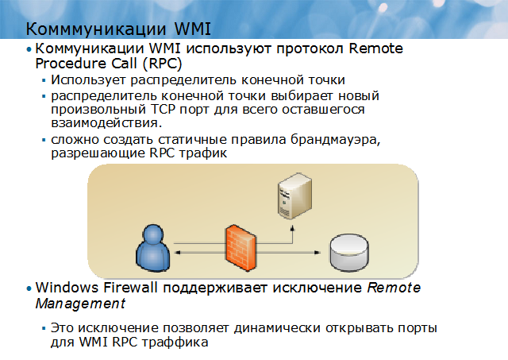
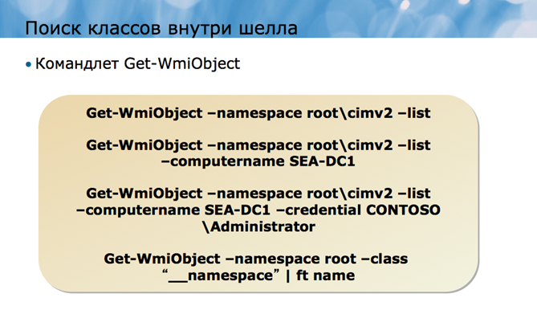
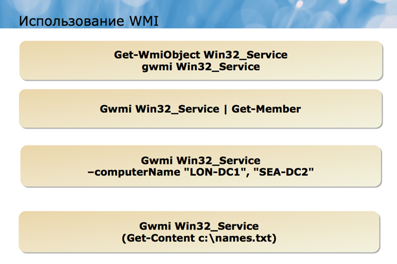
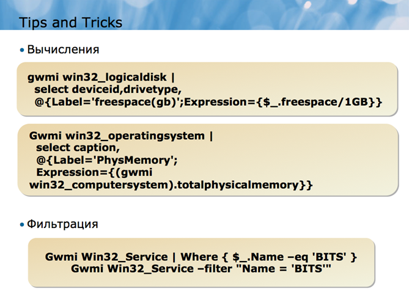

Windows Management Instrumentation
Windows Management Instrumentation или WMI – это технология управления, являющаяся частью операционной системы Microsoft® Windows. Впервые она появилась еще в Windows NT® 4.0, и обеспечивала более стабильный и постоянный доступ к настройкам конфигурации как локального, так и удаленных компьютеров.
Долгие годы WMI была одним из самых мощных и доступных инструментов администратора для получения управленческой информации и осуществления тех или иных изменений в конфигурации, особенно на удаленных компьютерах. Однако практическое использование WMI не всегда было простым – более ранние технологии, такие как Microsoft Visual Basic® Scripting Edition (VBScript), требовали программного подхода к использованию WMI, и далеко не все администраторы могли справиться с этой задачей. Windows PowerShell предлагает администраторам самый легкий и доступный во многих отношениях способ работы с WMI.
Важно понимать, что WMI может служить совершенно разным целям для разных групп пользователей. Например, разработчики программного обеспечения взаимодействуют с WMI при создании приложений, таких как Microsoft System Center Configuration Manager. В этом модуле мы будем рассматривать WMI как административный инструмент, и будем говорить только о тех элементах WMI, которые имеют отношение к повседневной работе администратора.
WMI – это технология управления, которая внедряется в операционную систему Windows со времен Windows NT 4.0. Каждая новая версия Windows, так же, как и каждая новая версия многих других продуктов Microsoft, обновляет WMI, придавая ей новые черты и наделяя новыми возможностями.
WMI предоставляет информацию в соответствии с моделью Common Information Model или CIM, которая была разработана промышленной группой Distributed Management Task Force или DMTF при участии Microsoft и других поставщиков. Но несмотря на то, что WMI стремится отобразить информацию стандартизированным способом, она почти не устанавливает жестких правил для разработчиков программного обеспечения. В результате WMI зачастую воплощается совершенно по-разному в разных продуктах Microsoft и сторонних продуктах. К сожалению, это делает изучение WMI очень сложным, причем проблема усугубляется тем фактом, что многие варианты реализации WMI нигде не задокументированы. Windows PowerShell может упростить доступ к WMI в случае, если вы будете знать, какой именно элемент WMI вам нужен, но не может полностью решить проблему отсутствия документации или отсутствия жестких стандартов внедрения WMI.
Отчасти сложность WMI объясняется тем фактом, что она отвечает нуждам различных групп пользователей, включая разработчиков ПО, которым часто требуется более детальное и менее качественное отображение управленческой информации. В будущем, вы, возможно, будете замечать, что все больше командлетов Windows PowerShell создается в виде оболочек вокруг технологии WMI. Такие оболочки будут обеспечивать более простые и узкоспециализированные способы работы с WMI, и в то же время скрывать многие из существующих «сложностей». Возможно, что некоторые из командлетов, которыми вы уже пользуетесь, в действительности используют WMI. Но даже полный переход на WMI не представляет собой никакой опасности. Это ценная технология, и, несмотря на некоторые противоречие и прочие недостатки, она дает довольно мощные возможности.
В качестве администратора вы, вероятно, будете сталкиваться с WMI в основном для извлечения информации о Windows, аппаратном обеспечении компьютера и продуктах, запущенных в Windows. В отдельных случаях вам также может потребоваться WMI для произведения изменений в конфигурации.
Когда вы используете WMI для установления соединения с удаленным компьютером, вы, по сути, используете подсистему WMI на своем локальном компьютере для поключения к WMI сервису на удаленном компьютере. Взаимодействие двух компьютеров происходит с использованием протокола Remote Procedure Call или RPC. RPC – это старый, проверенный временем протокол, который используется в Windows более десяти лет. Однако по мере того, как локальные брандмауэры получали большее распространение, RPC становился все сложнее в использовании и управлении.
Как правило, первое RPC соединение компьютера происходит с распределителем конечной точки удаленного компьютера. Этот распределитель конечной точки является частью сервиса RPC на удаленном компьютере и занимает собой хорошо известный TCP порт. Вы можете представить, что вы просто открываете порт в локальном брандмауэре, но в действительности на порт не ложится вся нагрузка по осуществлению RPC взаимодействия. Вместо этого распределитель конечной точки выбирает новый произвольный TCP порт для всего оставшегося взаимодействия. Так как порт выбирается произвольно, сложно создать статичные правила брандмауэра, разрешающие RPC трафик.

Windows Firewall поддерживает в качестве исключения сервис Remote Management, который может разрешить RPC, необходимый для WMI. Прочие брандмауэры могут иметь аналогичные возможности – уточнить это можно у их поставщиков. Другие настройки конфигурации, включая User Account Control (UAC) и Distributed Component Object Model (DCOM) могут также задействовать WMI-коммуникации; веб-страницы, расположенные по посещенным ранее URL адресам, выдают информацию при конфигурировании этих настроек.
Между тем, WMI – это не просто цельная программа. Она включает в себя несколько провайдеров, каждый из которых соединяет WMI-сервис с конкретным продуктом, технологией, функцией и.т.д. WMI провайдер действует почти как драйвер устройства, обеспечивая WMI сервису доступ к различным продуктам Windows. Например, на компьютерах с операционной системой Windows Server, на которых установлен сервис Windows DNS, WMI провайдер позволяет WMI сервису запрашивать и создавать ресурсные записи DNS, а также настройки конфигурации DNS.
Вся информация, которую извлекает WMI-провайдер, регистрируется в WMI-хранилище, централизованной конфигурационной базе данных, которая указывает WMI, что информация доступна на том или ином конкретном компьютере. Важно понимать, что информация, которую вы получаете с помощью WMI, в действительности не находится в хранилище: хранилище содержит лишь перечень доступной информации, и WMI извлекает ее динамически, по запросу. Хранилище состоит из пространств имен, которые приблизительно соответствуют отдельным продуктам и технологиям. Пространства имен расположены иерархически, а значит, они могут включать в себя подпространства.
Пространство имени верхнего уровня является корневым. Другие пространства могут содержать:
• Root\Cimv2
• Root\MicrosoftDNS
• Root\MicrosoftActiveDirectory
• Root\SecurityCenter
Не все компьютеры Windows содержат одни и те же пространства имен. Например, клиентский компьютер не будет содержать Root\MicrosoftActiveDirectory, а серверный компьютер не будет содержать Root\SecurityCenter.
Для того, чтобы работать с пространством имен на удаленном компьютере, это пространство не обязательно нужно устанавливать на свой компьютер. Например, если вы используете компьютер под управлением Windows 7 и хотите работать с Windows DNS на удаленном сервере, вы можете сделать это через пространство имен Root\MicrosoftDNS, установленное на этом удаленном компьютере, несмотря на то, что на вашем компьютере его нет.
Внутри каждого пространства имен WMI выделяет один или несколько классов. Класс – это абстрактное значение компонента управления. Например, пространство имен Root\Cimv2 содержит класс, который называется Win32_TapeDrive. Этот класс определяет свойства ленточного накопителя и существует в пространстве имени независимо от того, подключен данный носитель к компьютеру или нет.
Классы пространства имен The Root\Cimv2 почти всегда имеют префикс Win32_, даже на 64-битных компьютерах. Этот префикс не используется в названиях классов других пространств имен. В других пространствах имен названия классов вообще редко имеют какой-либо префикс.
К другим классам пространства имен Root\Cimv2 относятся:
• Win32_Account
• Win32_BIOS
• Win32_Desktop
• Win32_Fan
• Win32_Group
• Win32_Keyboard
• Win32_LogicalDisk
• Win32_NetworkAdapterConfiguration
• Win32_NTDomain
• Win32_Product
• Win32_Service
Как вы видите, пространство имен Root\Cimv2 содержит классы, имеющие отношение к операционной системе Windows и аппаратному обеспечению компьютера. Это одно из немногих пространств имен, содержащихся на каждом компьютере с Windows, хотя классы внутри этого пространства имен различаются на серверных и клиентских компьютерах, а также на различных версиях Windows ОС. Классы определяют два важных элемента: свойства и методы. Каждый класс имеет как минимум одно свойство, и подобно другим объектам в Windows PowerShell, свойства класса обеспечивают доступ к управленческой и конфигурационной информации. Некоторые классы обладают методами, которые требуют определенных действий, например, перезагрузки компьютера или изменения конфигурации.
Реальное существование класса называют экземпляром. Например, если на вашем компьютере есть четыре логических диска, то вы имеете четыре экземпляра класса Win32_LogicalDisk. Если на вашем компьютере нет подключенного ленточного накопителя, у него будет нулевой экземпляр класса Win32_TapeDrive, хотя сам класс будет существовать в виде абстрактного значения.
Экземпляры являются такими же объектами, как и любые другие объекты, которые используются в Windows PowerShell. Экземпляры обладают свойствами и методами, которые определены их классом, и вы можете работать с этими свойствами и методами внутри конвейера оболочки.
Во многих случаях экземпляры предназначены только для чтения, что означает, что вы можете извлечь значение свойства, но не можете изменить его. Особенно это касается классов в пространстве имен Root\Cimv2. Для того, чтобы вы могли изменить настройки конфигурации, класс должен обладать методом, который вы сможете использовать для осуществления изменений. За пределами пространства имен Root\Cimv2 принцип работы может быть другим. В некоторых случаях вы можете изменить значение свойства путем прикрепления к нему нового свойства. Примером этого может служить пространство имен для Internet Information Services (IIS) 6 внутри WMI. В этом заключается одно из главных противоречий WMI: в разные времена разные группы специалистов, занимающихся разработкой новых продуктов Microsoft, высказывали разные идеи по поводу того, как WMI может использоваться для управления продуктами, технологиями и функциями. Иногда идеи одной группы находили поддержку у специалистов другой группы и были адаптированы ими, что приводило к некоторой стабильности и схожести различных пространств имен; в других случаях эти идеи никогда более не были использованы, и пространства имен, использованные той или иной группой специалистов, оставались уникальными внутри WMI.
При существовании десятков тысяч WMI классов найти тот единственный, который помог бы выполнить конкретную задачу, очень сложно. Центральной директории WMI классов не существует, к тому же, существует очень мало способов (конечно, кроме использования поисковых машин) поиска классов по ключевым словам. Для поиска нужного класса следует основываться на трех базовых принципах:
• Опыт. По мере того, как вы будете приобретать опыт в использовании WMI, вы научитесь угадывать имена классов, после чего с помощью специальных инструментов или поисковых машин вы сможете подтвердить свои догадки. Также может помочь обращение к более опытным администраторам за помощью. Такую возможность предоставляют некоторые онлайн-сообщества, например:
• The “Windows PowerShell” Internet newsgroup (доступна по адресу: http://go.microsoft.com/fwlink/?LinkId=193516)
• www.PoshComm.org
• www.PowerShell.com
• www.ScriptingAnswers.com
• www.ConcentratedTech.com
• Исследования. Различные «исследовательские» и «поисковые» инструменты WMI позволяют просматривать WMI хранилища как на локальном, так и на удаленных компьютерах. В хранилищах классы обычно располагаются в алфавитном порядке, что упрощает поиск класса по названию и просмотр доступных классов.
• Примеры. Используя поисковые интернет-машины для поиска по ключевым словам (например, “WMI BIOS” или “WMI disk space), зачастую можно обнаружить примеры, написанные другими людьми. Эти примеры, даже если они и не являются в точности тем, что вам нужно, могут помочь вам найти классы, имеющие отношение к выполняемой вами задаче. Хорошей стартовой точкой для поиска примеров, имеющих отношение ко многим видам административной работы, является Microsoft TechNet Script Center Repository (http://go.microsoft.com/fwlink/?LinkId=193517).

Обратите внимание, что даже примеры, имеющие отношение к другим технологиям, таким как VBScript, JScript или Perl, могут быть полезными для поиска названий WMI классов. Не исключайте такие варианты примеров лишь потому, что они не относятся исключительно к Windows PowerShell.
Помимо этого, вы можете дать Windows PowerShell команду отобразить список классов:
Get-WmiObject -list
Эта команда отображает список классов пространства имен, используемого по умолчанию. Чтобы отобразить классы из другого пространства имен, следует добавить параметр – namespace и уточнить имя пространства имен, например, Root\SecurityCenter. Также оболочка может помочь найти классы, название которых содержит определенную строку символов:
Get-WmiObject -list -class *user*
Поскольку параметр –class является позиционным, вы можете даже опустить имя параметра –class:
Get-WmiObject -list *user*
WMI развивалась годами, и продолжает развиваться. Это означает, что конкретный WMI класс может вести себя слегка по-разному в разных версиях Windows, могут иметь меньше свойств или полностью отсутствовать в старых версиях Windows. Обязательно учитывайте это, особенно при работе с удаленными компьютерами. Пространства имен на разных компьютерах могут очень сильно различаться, не считая пространства имен Root\Cimv2. Клиентский и серверный компьютер обычно имеют разные наборы пространств имен; пространства имен часто бывают доступными только когда соответствующий продукт или технология установлены на компьютер.
Было бы замечательно, если бы для каждого пространства имен и WMI класса существовало бы централизованное хранилище. К сожалению, это не так.
Главные классы операционной системы, такие как классы в пространстве имен Root\Cimv2, последовательно задокументированы; эта документация хранится в Интернете как часть библиотеки Microsoft Developer Network (MSDN®). Поскольку библиотека периодически подвергается реорганизации, меняя URL адреса, самый простой способ найти документацию для класса – воспользоваться поисковыми системами. Например, если вы введете в строку поиска Win32_Service, вы обнаружите, что первые результаты выдачи будут вести именно в Библиотеку, а уже оттуда вы можете начать поиск других классов в пространстве имен, используя таблицу дерева контента.
Вне пространства имен Root\Cimv2 документация намного менее стабильна и согласованна, как по форме, так и в плане доступности. У многих групп разработчиков просто не было времени, чтобы подготовить необходимую документацию. В других случаях группы разработчиков могли создать WMI классы для собственного использования, но не думали о том, что эти классы станет использовать кто-то еще, поэтому, документация так и не была опубликована для широкого доступа.
Если документация доступна – а это чаще всего бывает с классами пространства имен Root\Cimv2 – обращайте пристальное внимание на детали, указывающие, с какими продуктами ли с какой версией Windows данный класс работает. Однако не забывайте, что классы могут различаться в зависимости от версии Windows. Несмотря на то, что класс Win32_Processor присутствует, например, на Windows NT 4.0, он ведет себя совсем не так, как на Windows Server 2008 R2 (хотя в данном случае в документации объясняется разница).
WMI содержит мощную систему безопасности. Защита может устанавливаться как для целого пространства имен, так и для отдельного атрибута класса. По умолчанию большая часть защитной информации конфигурируется в пространстве имен Root, тогда как прочие пространства имен и их классы перенимают это корневое разрешение.
Также по умолчанию защита WMI конфигурируется таким образом, чтобы локальные пользователи могли запрашивать почти любую информацию из WMI. Члены локальной административной группы (которая в доменной среде обычно включает доменные админские группы доменного уровня), могут запрашивать информацию удаленно. Не стоит менять настройки конфигурации системы безопасности WMI до тех пор, пока вы не будете осознавать на 100%, что вы делаете, и каковы возможные последствия. Модификация системы безопасности может привести к полной остановке WMI или негативно повлиять на продукты, основанные на WMI, такие как System Center Configuration Manager. Настройки безопасности, заданные по умолчанию, подходят для большинства ситуаций, и чаще всего самым мудрым решением будет не трогать их совсем.
Настройки безопасности WMI можно просмотреть и модифицировать с помощью оснастки WMI Control в консоли Microsoft Management Console (MMC). По умолчанию консоль не содержит эту оснастку; вам необходимо открыть новое MMC-окно или существующую консоль и добавить оснастку вручную.
Обратите внимание, что WMI чувствительна к User Account Control (UAC) на тех версиях Windows, которые поддерживают эту технологию защиты. Если вы планируете запросить WMI информацию с удаленного компьютера, вы должны обладать действующим администраторским токеном. Обычно это означает, что вы должны либо работать в Windows PowerShell как «Администратор» (чтобы иметь необходимую привилегию), либо обеспечить альтернативный мандат после установления WMI соединения.
Windows PowerShell также может помочь вам изучить все классы в заданном пространстве имен, так как она может выдать список всех классов, присутствующих в пространстве имен. Чтобы получить список всех классов, содержащихся в пространстве имен, используемом по умолчанию, запустите команду:
Get-WmiObject –namespace root\cimv2 –list
Вы можете заменить название пространства имен Root\Cimv2 другим названием пространства имен для того, чтобы увидеть классы, содержащиеся в нем. А если добавить параметр –computerName, можно увидеть классы пространства имен на удаленном компьютере:
Get-WmiObject –namespace root\cimv2 –list –computername LON-DC1
Обычно командлет Get-WmiObject использует мандат того пользовательского аккаунта, через который вы открыли окно Windows PowerShell. Это единственный аккаунт, который может запрашивать WMI информацию локально. WMI сама по себе не позволит использование альтернативного мандата для локального соединения. Однако для удаленного соединения вы можете добавить параметр –credential, чтобы указать альтернативный аккаунт. Имя пользователя должно быть в формате DOMAIN\USERNAME:
Get-WmiObject –namespace root\cimv2 –list –computername LON-DC1 –credential CONTOSO\Administrator
Наконец, чтобы увидеть список всех пространств имен, запустите в Windows PowerShell следующую команду:
get-wmiobject -namespace root -class "__namespace" | ft name
Windows PowerShell делает доступной большую часть WMI информации с помощью двух простых командлетов, тем самым предоставляя вам легкий способ извлечения WMI информации с локального и удаленного компьютера, а также способ задействовать WMI методы.

Помните, что Windows PowerShell отображает всю WMI информацию в форме объектов, так же, как она поступает с любой другой информацией. Это означает, что командлеты, используемые для сортировки, фильтрации, группировки, экспорта, сравнения, и.т.д. могут использоваться в сочетании с WMI в рамках оболочки.
Командлет Get-WmiObject отвечает за извлечение информации либо с локального компьютера, либо с одного или нескольких удаленных компьютеров. Параметр –class уточняет имя класса, которое вы хотите извлечь; по умолчанию извлекаются все экземпляры этого класса. Если класс находится вне пространства имен Root\Cimv2, используйте параметр –namespace для уточнения имени пространства имен, в котором можно найти класс. Также используйте параметр –computername, чтобы уточнить имя удаленного компьютера и параметр –credential, чтобы уточнить альтернативный мандат для удаленного подключения. За один раз можно запросить только один класс.
Командлет извлекает указанные экземпляры и помещает их в конвейер, например:
Get-WmiObject Win32_Service
Обратите внимание, что некоторые классы WMI перехлестываются с другими командлетами Windows PowerShell, например, Get-Service. Однако вы, возможно, уже заметили различия в их работе и способе отображения информации. Например, Get-Service использует Microsoft .NET Framework для извлечения информации о сервисах; эта информация не включает некоторые детали, такие как режим запуска сервиса или его учетная запись, поскольку такая информация не включена в Framework. Класс WMI Win32_Service, в свою очередь, включает информацию о режиме запуска и учетной записи сервиса. Вы можете увидеть эти свойства, передав экземпляр свойства по конвейеру командлету Get-Member:
Get-WmiObject Win32_Service | Get-Member
Также вы можете увидеть все свойства всех экземпляров класса, используя Format-List:
Get-WmiObject Win32_Service | Format-List *
Встроенный псевдоним командлета Get-WmiObject - gwmi.
В разделе справочника, посвященном командлету Get-WmiObject, обратите внимание на параметр –computerName. В справочнике по синтаксису он указывается в следующем виде:
[-ComputerName <string[]>]
Значение <string[]> указывает на то, что параметр может принимать несколько имен компьютеров. Одним из способов указать эти имена является их перечисление через запятую, поскольку Windows PowerShell автоматически интерпретирует такой список как набор объектов:
-computerName "LON-DC1","SEA-DC2"
Однако к параметру –computerName можно прикрепить все, что обозначает набор объектов. Например, вы можете создать текстовый файл, в котором в каждой строчке указано одно имя компьютера:
LON-DC1
SEA-DC2
NYC-SRV7
Для чтения этого файла вы можете использовать командлет Get-Content. Командлет обрабатывает каждую строчку текстового файла как объект строки – именно это необходимо параметру –computerName:
-computerName (Get-Content c:\names.txt)
Скобки указывают оболочке на то, что команду Get-Content необходимо выполнить в первую очередь. Результаты этого командлета передаются параметру –computerName.
При соединении с несколькими удаленными компьютерами командлет Get-WmiObject все же может работать с альтернативным мандатом, на который указывает параметр –credential. Однако для всех компьютеров должен использоваться один и тот же мандат. Множественные соединения производятся последовательно, а не параллельно, поэтому, может потребоваться некоторое время для извлечения списка имен. Если командлен по каким-то причинам не может получить доступ к компьютеру (компьютер находится в режиме оффлайн, доступ заблокирован или не получено разрешение), то ситуация воспринимается как бесконечная ошибка, в результате чего командлет выдает сообщение об ошибке и продолжает работу, пытаясь подключиться к следующему в списке компьютеру.
Объекты, возвращаемые командлетом Get-WmiObject, всегда обладают свойством __SERVER, которое содержит имя компьютера, из которого поступил данный объект. Это свойство может быть полезным, когда вы отправляете запрос нескольким компьютерам, так как позволяет отсортировать и сгруппировать объекты по имени компьютера:
Get-WmiObject Win32_Service –computer (Get-Content c:\names.txt) | Sort __SERVER | Format-Table –groupBy __SERVER
Командлет Get-WmiObject всегда использует Remote Procedure Calls (RPCs) для подключения к удаленным компьютерам; «родные» способности удаленной работы Windows PowerShell не задействуются. По этой причине Get-WmiObject может подключиться к любому удаленному компьютеру, на котором запущен сервис WMI, даже если на нем не установлена Windows PowerShell.
Еще одним способом запросить данные с нескольких компьютеров является использование командлета ForEach-Object. Помните, что командлет Get- Content читает текстовый файл и возвращает каждую строчку в виде объекта. ForEach-Object дает возможность перечислить все эти объекты. Если бы каждая строчка текста содержала имена компьютеров, вы бы перечисляли имена компьютеров. Преимущество этой техники состоит в том, что командлет ForEach-Object может выполнять множественные команды по отношению к каждому компьютеру:
Gc c:\names.txt | ForEach-Object {
gwmi win32_computersystem;
gwmi win32_operatingsystem } |
select buildnumber,servicepackmajorversion,totalphysicalmemory
Скриптовый блок ForEach-Object содержит два WMI запроса, каждый из которых возвращает разные объекты. Объекты обоих типов отправляются по конвейеру командлету Select-Object. Select-Object затем выбирает три указанные свойства. Выходные данные будут выглядеть примерно так:
buildnumber servicepackmajorversion totalphysicalmemory
----------- ----------------------- -------------------
3220758528
7600 0
Если вы посмотрите внимательно, то заметите, что выходные данные расположены не в одну строчку. Первый объект в конвейере – это Win32_ComputerSystem, который не имеет свойства BuildNumber или ServicePackMajorversion – поэтому, данные колонки в первой строчке будут пустыми. Второй объект в конвейере не имеет свойства TotalPhysicalMemory, поэтому, эта колонка во второй строчке является пустой. Другими словами, вы увидите пример, в котором эти отдельные куски информации объединяются в один поток выходных данных.

Вы уже знаете, как использовать командлет Select-Object и добавлять новые свойства объекту. Часть значения свойства под названием Expression может содержать почти любой код Windows PowerShell, в том числе и абсолютно новый командлет. Например, следующая команда позволит извлечь сведения о логических дисках компьютера и отобразить информацию об имеющемся на них свободном месте в гигабайтах:
gwmi win32_logicaldisk |
select deviceid,drivetype,
@{Label='freespace(gb)';Expression={$_.freespace/1GB}}
Чуть более усовершенствованный вариант этой техники может задействовать параметр –as, чтобы привести полученные данные об имеющемся свободном месте к целому числу. Поскольку целое число не имеет дробей, результат округляется в сторону ближайшего целого числа, а десятичные значения игнорируются:
gwmi win32_logicaldisk |
select deviceid,drivetype,
@{Label='freespace(gb)';Expression={$_.freespace/1GB –as [int]}}
Другой вариант этой техники позволяет объединять информацию из двух или более WMI классов в единую строку выходных данных. Предположим, вы хотите извлечь информацию о версии Windows и объеме физической памяти компьютера. Вы можете начать с запроса информации о классе Win32_OperatingSystem:
Gwmi win32_operatingsystem | select caption
Затем вы можете добавить новое пользовательское свойство в выходные данные, и значением этого свойства будет абсолютно новый WMI запрос к классу
Win32_ComputerSystem:
Gwmi win32_operatingsystem |
select caption,
@{Label='PhysMemory';
Expression={(gwmi win32_computersystem).totalphysicalmemory}}
Что мы здесь видим? Часть команды Expression выполняет новый WMI запрос. Обратите внимание, что запрос помещен в круглые скобки. Благодаря этому, результаты запроса воспринимаются как объект, что особенно важно по той причине, что этот запрос возвращает только один WMI объект (в конце концов, на любом компьютере установлена только одна операционная система). Точка после закрывающей скобки говорит о том, что вы хотите получить доступ к составной части WMI объекта, возвращенного в результате выполнения запроса, в частности, к свойству TotalPhysicalMemory. Значение этого свойства становится значением нашего пользовательского свойства PhysMemory. Попробуйте запустить вышеуказанную команду и посмотрите результат.
Что если вы пытались бы связаться с удаленным компьютером? Один из способов сделать это – просто уточнить имя компьютера для обоих WMI запросов.
Gwmi win32_operatingsystem –comp Server1 |
select caption,
@{Label='PhysMemory';
Expression={
(gwmi win32_computersystem –comp Server1).totalphysicalmemory}
}
Но есть способ лучше – уточнить имя компьютера только для начального WMI соединения. После того как WMI объект станет доступным, вы можете использовать специальное свойство __SERVER, чтобы получить доступ к имени компьютера. Это означает, что вам придется изменить имя компьютера только в одном месте, для того чтобы отправить запрос другому компьютеру:
Gwmi win32_operatingsystem –comp Server1 |
select caption,
@{Label='PhysMemory';
Expression={
(gwmi win32_computersystem –comp $_.__SERVER).totalphysicalmemory}
}
В данном примере заполнитель $_ , расположенный в скриптовом блоке Expression, содержит WMI_объект, который был передан по конвейеру командлету Select-Object. Вслед за ним идет точка, которая указывает, что мы хотим получить доступ к части объекта, содержащегося в данном заполнителе. Мы получаем доступ к параметру __SERVER, который содержит информацию об имени компьютера, из которого пришел WMI-объект. Это имя компьютера станет значением параметра –computerName в нашем следующем WMI запросе.
В некоторых случаях вам, возможно, не понадобятся все экземпляры классов. Например, вы хотите запросить информацию только об одном сервисе, BITS. Одним из способов добиться этого станет использование командлета Where-Object:
Gwmi Win32_Service | Where { $_.Name –eq 'BITS' }
Однако эта техника имеет один недостаток – в данном случае оболочка отправляет запрос в каждый экземпляр класса, возвращает результаты и проверяет каждый из них, чтобы определить, какой из них соответствует вашим критериям. Когда вы извлекаете данные о большом количестве объектов, особенно с удаленных компьютеров, этот процесс может занять очень много времени и привести к большой нагрузке на процессор.
Командлет Get-WmiObject предлагает параметр –filter, который отправляет ваш критерий WMI-сервису. WMI-сервис может отфильтровать информацию намного быстрее и вернуть только те результаты, которые соответствуют вашим критериям. К сожалению, WMI-сервис не принимает символы сравнения Windows PowerShell, поэтому, вам придется вспомнить несколько другой синтаксис для указания критериев:
Gwmi Win32_Service –filter "Name = 'BITS'"
Пару слов об этом синтаксисе:
• Строки могут быть заключены в одинарные кавычки. Поэтому, весь критерий обычно заключен в двойные кавычки, как показано выше.
• К знакам сравнения относятся:
= (equality)
<> (inequality)
>= (greater than or equal to)
<= (less than or equal to)
> (greater than)
< (less than)
• LIKE (разрешает групповые символы)
• Не используйте заполнитель $_, поскольку он работает только в Windows PowerShell, но не в WMI. Для указания критерия WMI указывайте имя свойства.
• Можно использовать ключевые слова AND и OR, чтобы указать несколько критериев.
Символ LIKE является особенно гибким. Применяя его, вы можете:
• Использовать % в качестве группового символа. “Name LIKE ‘%windows%’”
• Использовать _ в качестве 1-символьного группового знака.
• Использовать [ и ], чтобы обозначить ряд или набор символов: “DriveType LIKE ‘[abcdef]’”
WMI, как и Windows PowerShell, обычно нечувствительна к регистру. Ключевые слова, такие как LIKE могут быть напечатаны и строчными буквами – like; символы в командной строке, например, названия сервисов, также нечувствительны к регистру. Некоторые WMI-провайдеры чувствительны к регистру, но это, скорее, исключения.
И, наконец, лучший способ произвести фильтрацию – это расположить критерии фильтрации как можно ближе к левому краю командной строки Windows PowerShell. Когда вы можете произвести фильтрацию путем использования параметра –filter командлета, предпочтительнее использовать Where-Object для выполнения этой задачи.
Иногда вы можете столкнуться с языком написания запросов WMI Query Language (WQL), например, в рамках более старых технологий, таких как VBScript, где WQL был приоритетным способом составления запросов по извлечению данных. Windows PowerShell позволяет использовать такие запросы. Для этого нужно просто прикрепить строку запроса к параметру –query командлета Get-WmiObject:
Gwmi –query "SELECT * FROM Win32_Process"
Параметр –query может быть использован в сочетании с –namespace, –credential, –computername и многими другими параметрами, но не с – class, так как строка запроса должна уточнять, к какому классу обращен запрос.
В разделе справочника, посвященному Get-WmiObject, можно найти более подробную информацию об этих параметрах.
Использование параметра –query не имеет конкретных достоинств или недостатков по сравнению с другими формами командлета Get-WmiObject.
Если вы попробуете передать WMI-объект по конвейеру командлету Format-List *, вы заметите несколько свойств, имена которых начинаются с двойного нижнего подчеркивания, например, __SERVER и __PATH:
Get-WmiObject Win32_Process | Format-List *
Эти системные свойства относятся непосредственно к WMI и могут содержать весьма ценную информацию. Например, вы уже видели, что свойство __SERVER содержит информацию об имени компьютера, с которого «пришел» WMI-объект. Это работает даже в том случае, если вы указали локальный хост или IP адрес для WMI-соединения:
Gwmi Win32_BIOS –computer localhost | Format-List *
__SERVER всегда содержит настоящее имя компьютера. Свойство __PATH также может быть полезным: оно содержит указатель, который может использоваться для уникальной ссылки на WMI-объект. Вы даже можете использовать его для повторного извлечения этого WMI_объекта.
Зачастую приходится извлекать несколько WMI-объектов, после чего работать с каждым из них индивидуально. Так как WMI не является частью Windows PowerShell, оболочка содержит ограниченное количество командлетов для работы с WMI-объектами. В большинстве случаев основные командлеты оболочки могут манипулировать WMI-объектами так, как это требуется для выполнения ваших задач. Но иногда, однако, вы будете вынуждены отправлять WMI_объекты командлету ForEach-Object, чтобы выполнить определенные действия над каждым из них по очереди:
Gwmi Win32_Process | ForEach-Object { $_ }
В данном примере каждый WMI-объект отправляется в конвейер, что означает, что ForEach-Object в действительности не выполняет никакой важной функции. Однако в этот скриптовый блок вы можете поместить практически любую команду Windows PowerShell или даже несколько задач.